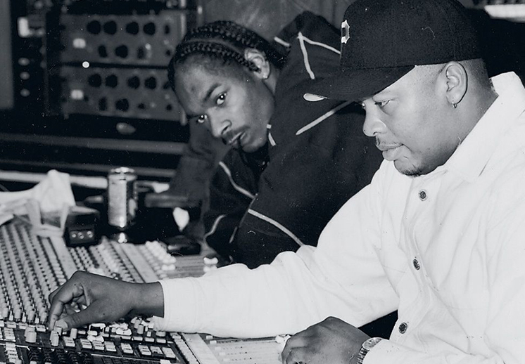
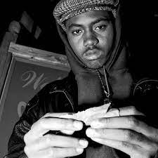

historia
Es una cultura originada en el sur del Bronx y Harlem, en la ciudad de Nueva York por Afroamericanos y Latinoamericanos durante la década de 1970.Si bien el término hip hop o rap se usa a menudo para referirse al estilo musical y al estilo de vida, se considera que el hip hop no solo se circunscribe al ámbito musical y por el contrario consta de cuatro principales elementos: rap (oral: recitar o cantar), turntablism o "DJing" (auditiva o musical), breaking (físico: baile) y graffiti (visual: pintura).
Artistas de talla mundial e inconfundibles representantes de género como Michael Jackson o Madonna. Otros artistas con influencias de otros estilos como Coldplay, Robbie Williams hasta grandes divas como Mariah Carey o Kylie Minogue. Todos ellos tienen un hueco indudable en la industria pop
Artistas del genero
Tupac

Tupac Amaru Shakur nacido como Lesane Parish Crooks (Nueva York, 16 de junio de 1971-Las Vegas, 13 de septiembre de 1996) también conocido como 2Pac, Makaveli o simplemente Tupac, fue un rapero y actor estadounidense. Es considerado por muchos como uno de los raperos más importantes de todos los tiempos, y más influyentes de la historia del rap. Gran parte de la obra Shakur se ha destacado por abordar los problemas sociales que plagaban los centros urbanos, por lo cual también es considerado un símbolo de resistencia y activismo contra la desigualdad.
Nas
Nasir bin Olu Dara Jones (n. Crown Heights, Brooklyn, Nueva York; 14 de septiembre de 1973), más conocido como Nas, es un rapero estadounidense. Creció en los complejos de viviendas Queensbridge en Queens. Hijo de Olu Dara, un trompetista de jazz, Nas saltó a la fama en 1993 tras la grabación de su LP debut Illmatic, considerado como uno de los mejores álbumes de hip hop de todos los tiempos.
Dr.Dre
Andre Romelle Young (Compton, California; 18 de febrero de 1965), más conocido por su nombre artístico Dr. Dre, es un rapero, productor y empresario estadounidense.
Notorious B.I.G

Christopher George Latore Wallace (Brooklyn, Nueva York; 21 de mayo de 1972 - Los Ángeles, California; 9 de marzo de 1997), más conocido por su nombre artístico The Notorious B.I.G., Biggie Smalls o simplemente Biggie, fue un rapero y productor estadounidense. Es considerado como uno de los raperos más importantes de todos los tiempos, y de los más influyentes de la historia del rap.
Ver mas..